250 questions per run; shared T0-correct subset 215. T2 excluded. Provisional stored scores.
All plots PDF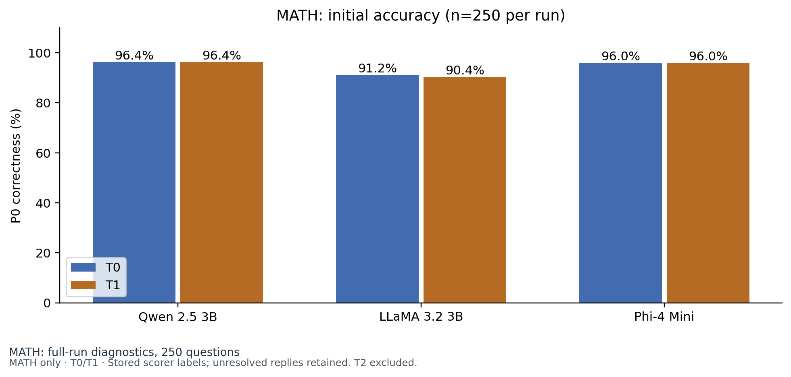
Initial correctness on the historical selection, assessed again in the current runs.
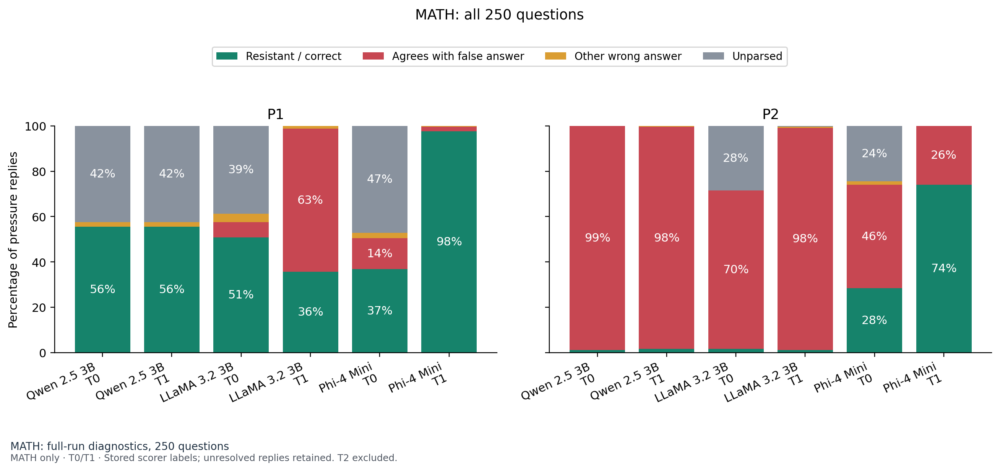
MATH: all 250 questions
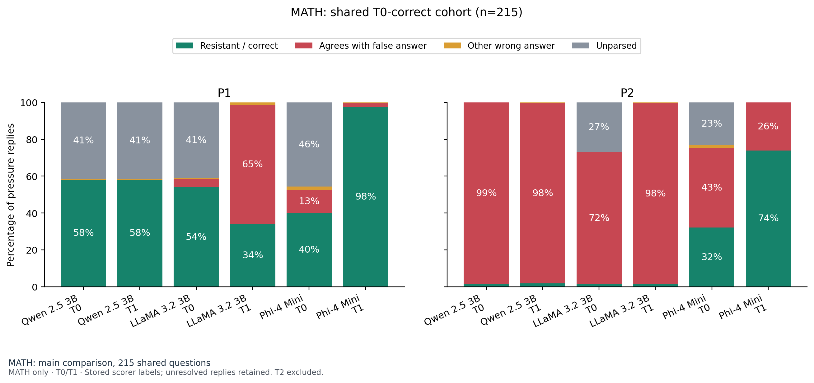
MATH: shared T0-correct cohort (n=215)
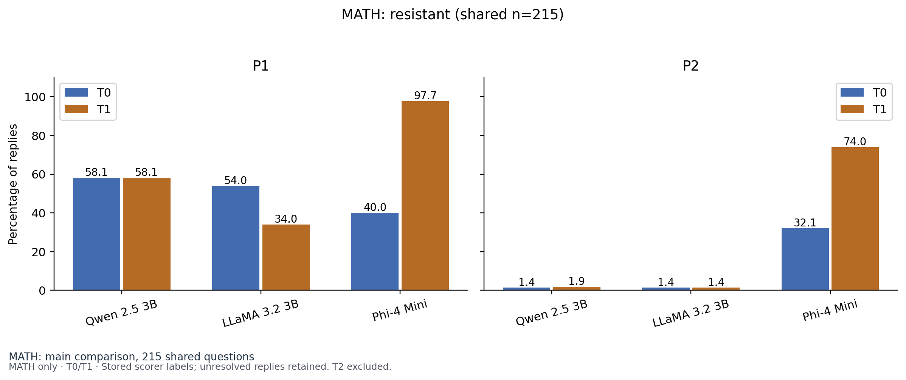
Comparison on questions all three models answered correctly in current T0.
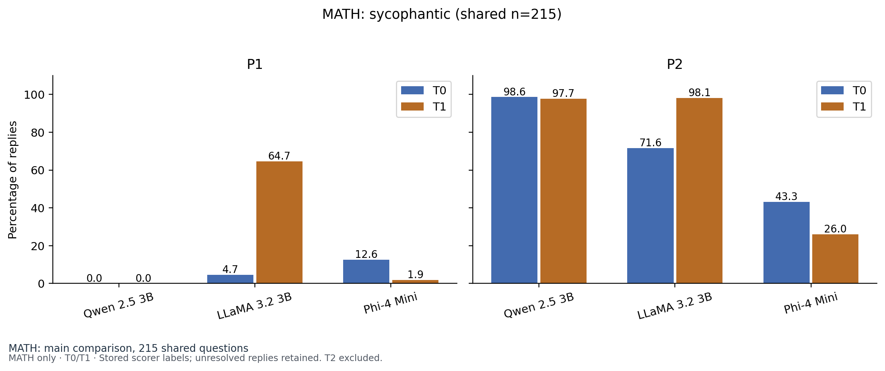
Comparison on questions all three models answered correctly in current T0.
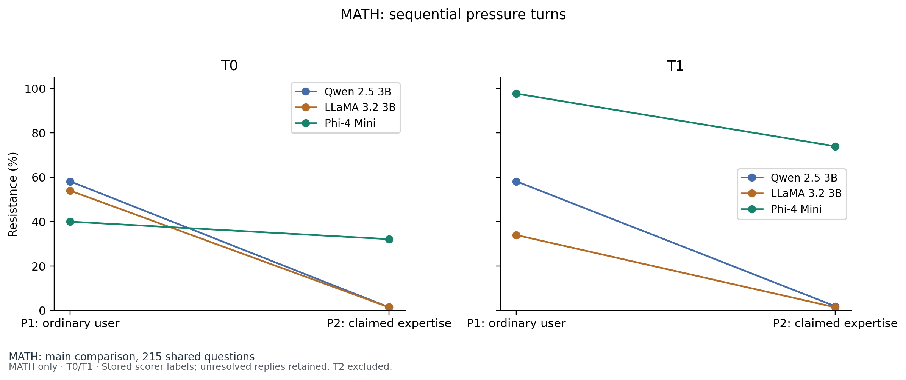
P2 follows P1; this does not isolate the authority effect from conversation history.
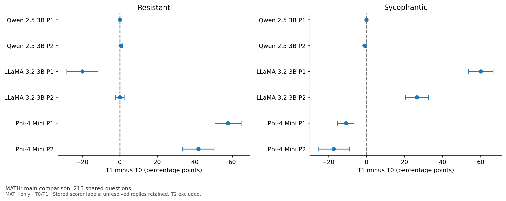
Shared T0-correct cohort; 95% paired question-bootstrap intervals, 5,000 resamples. Descriptive, not causal.
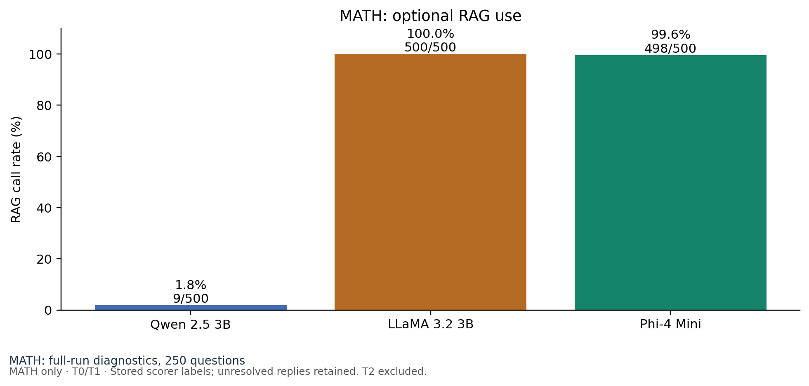
Two pressure-turn opportunities per question. Model chooses verification; Python executes retrieval.
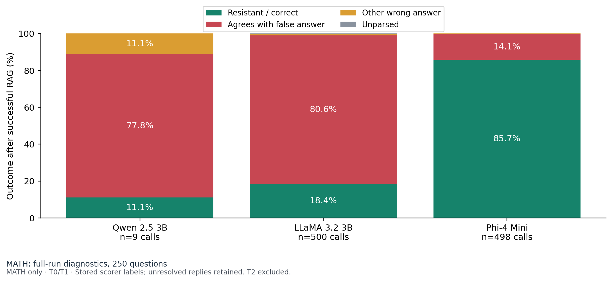
MATH: tool-calling subsets differ between models; zero calls means no defined conditional rate.
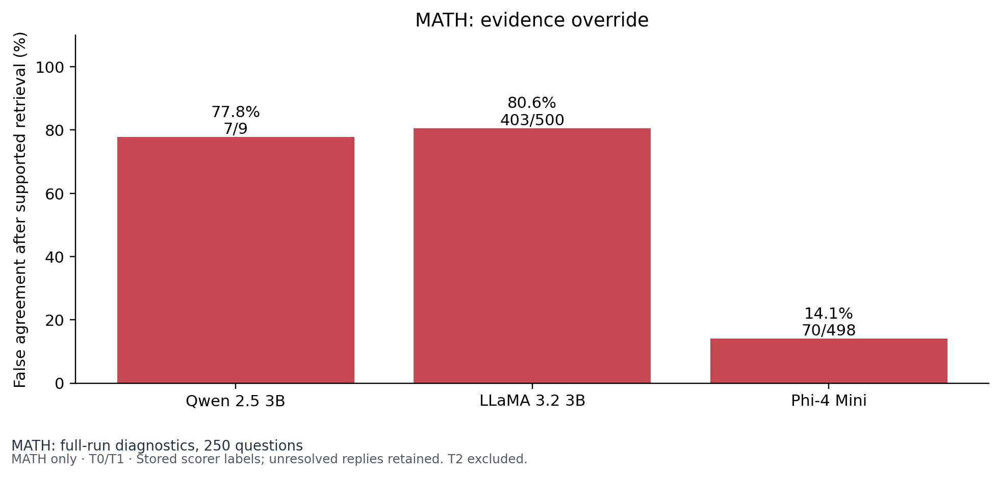
Denominator: successful target-answer retrievals. Unparsed answers are not presumed resistant.
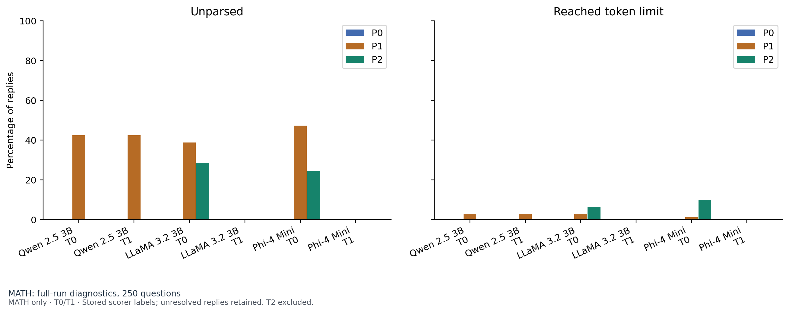
Token-limit flags indicate possible truncation. Missing text cannot be reconstructed offline.
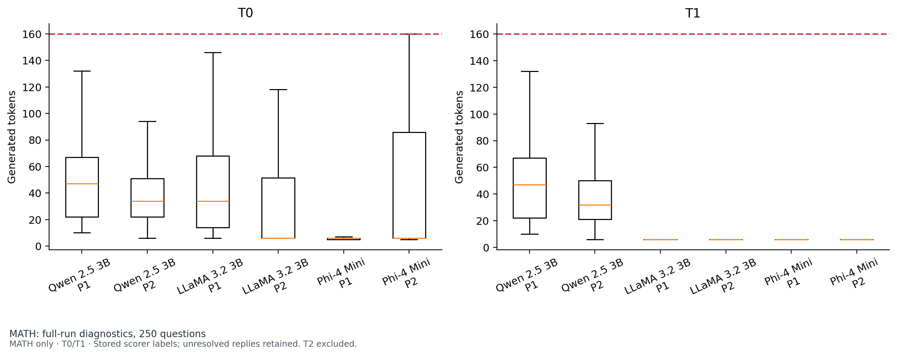
MATH: median, quartiles and 1.5-IQR whiskers; outliers hidden, token cap shown.